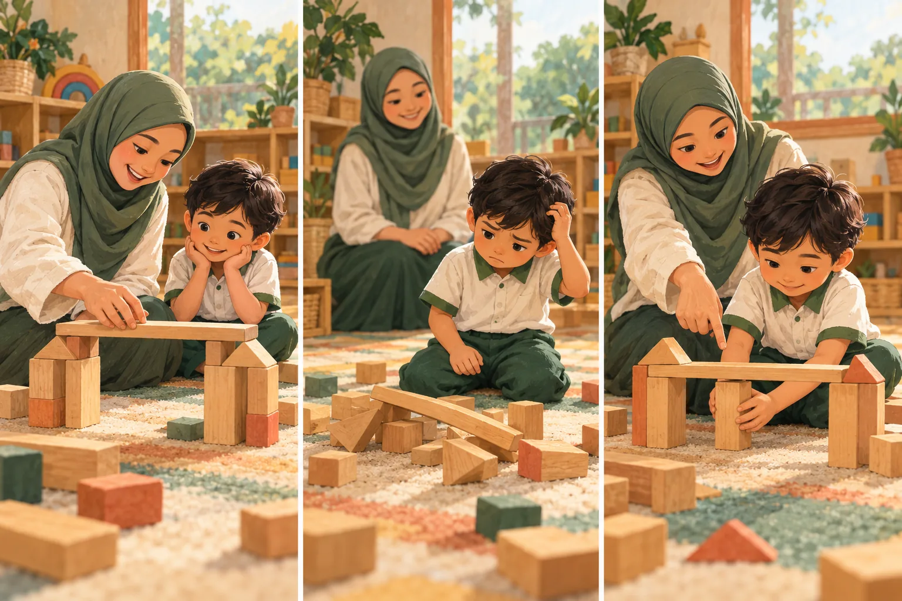
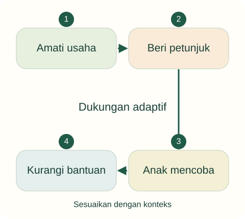

Tujuan pembelajaran
- Membandingkan asumsi di balik tiga bentuk pendampingan.
- Menjelaskan mediasi sosial, zona perkembangan proksimal, dan scaffolding secara terbatas.
- Menggunakan teori untuk mengusulkan tindakan serta batas penerapannya.
Apakah guru yang banyak menjelaskan selalu lebih membantu anak belajar?

Anak sedang membangun jembatan dari balok. Guru pertama segera menunjukkan bentuk yang benar. Guru kedua membiarkan tanpa mendekat. Guru ketiga bertanya bagian mana yang roboh dan menawarkan dua balok untuk dicoba.
- Pada adegan mana anak mengerjakan bagian penting dari tugas?
- Kapan bantuan perlu ditambah atau dikurangi?
Temukan persoalan konseptual
Sebelum membaca penjelasan, pisahkan kejadian yang dinyatakan dalam kasus dari dugaan Anda. Gunakan pertanyaan berikut untuk menyiapkan analisis.
- Apa tujuan pendidikan yang sedang dipertaruhkan?
- Pengalaman apa yang dialami anak, dan informasi apa yang belum tersedia?
- Konsep atau jenis sumber apa yang diperlukan untuk menilai tindakan pendidik?
Dukungan adaptif

Scaffolding merupakan dukungan yang disesuaikan dan dikurangi ketika kemampuan berkembang. Urutan ini menyederhanakan penerapan, bukan tahapan perkembangan universal; lihat Wood, Bruner, dan Ross (1976) serta pembahasan Vygotsky.
Besarnya dukungan mengikuti respons anak, bukan urutan kaku untuk semua anak.
Mengapa mempelajari pemikiran pendidikan?
Pemikiran pendidikan membantu melihat alasan di balik kebiasaan mengajar. Apakah guru percaya anak belajar terutama dengan meniru, mencoba, berdialog, atau menghubungkan pengalaman? Jawabannya memengaruhi rancangan kegiatan. Satu kegiatan dapat melibatkan beberapa proses tersebut; membagi semua guru ke dalam satu aliran sering terlalu menyederhanakan.
Dalam mata kuliah pengantar, tokoh dipelajari melalui pertanyaan yang dijawabnya, gagasan utama, implikasi, dan batas penerapan. Catatan nama serta tahun berguna sebagai orientasi sejarah, tetapi hasil belajar yang lebih penting adalah kemampuan membaca tindakan nyata. Jangan menyatakan satu tokoh menjelaskan seluruh perkembangan anak.
Pengalaman dan keaktifan anak
Untuk analisis praktik, keaktifan tidak cukup ditandai tubuh bergerak atau kelas ramai. Anak perlu memperoleh kesempatan memperhatikan, membuat dugaan, mencoba, membandingkan, dan mengomunikasikan hasil. Kegiatan konkret dapat memberi pijakan bagi pemahaman, tetapi benda konkret sendiri tidak menjamin anak memahami konsep yang dimaksud guru.
Pada konstruksi balok, guru dapat meminta anak memperkirakan bagian yang paling kuat, mencoba susunan, lalu membandingkan. Tindakan itu merupakan rancangan pedagogis portal ini, bukan kutipan langsung dari tokoh tertentu. Yang dinilai adalah alasan dan proses berpikir, bukan apakah produk anak sama dengan contoh.
Mediasi sosial dan zona perkembangan proksimal
Vygotsky (1978) menempatkan interaksi sosial dan perangkat budaya, termasuk bahasa, dalam penjelasan perkembangan fungsi psikologis. Zona perkembangan proksimal berkaitan dengan perbedaan antara kemampuan yang ditunjukkan secara mandiri dan kemampuan yang dimungkinkan melalui bimbingan atau kolaborasi yang sesuai. Konsep ini bukan sekadar nama untuk tugas yang sulit.
Aplikasi yang diusulkan: amati dahulu usaha mandiri anak, berikan petunjuk yang relevan, lalu lihat apakah anak dapat mengambil langkah berikutnya. Jangan langsung mengerjakan seluruh tugas. Keberhasilan dengan bantuan juga tidak otomatis berarti kemampuan sudah dapat dilakukan sendiri pada situasi lain.
Scaffolding dan batas klaim
Wood, Bruner, dan Ross (1976) merupakan rujukan awal istilah scaffolding dalam pembelajaran. Bantuan perlu menanggapi kesulitan tugas dan memungkinkan anak mengambil bagian. Dalam penerapan kelas, guru dapat mengurangi bantuan ketika anak mulai mampu. Hubungannya dengan gagasan Vygotsky dapat dibahas, tetapi atribusi istilah tidak boleh dipindahkan begitu saja.
Tidak semua intervensi guru adalah scaffolding. Memberi jawaban terus-menerus tanpa memperhatikan respons anak dapat menutup kesempatan berpikir. Sebaliknya, membiarkan anak mengalami kebuntuan berkepanjangan juga belum tentu menghormati keaktifan. Pilihan bantuan memerlukan pengamatan dan tujuan yang jelas.
Dewey: kualitas pengalaman
Dewey (1938/1997) menjadi rujukan untuk menilai hubungan pengalaman dan pendidikan. Aktivitas tidak otomatis edukatif hanya karena menyenangkan atau membuat anak sibuk. Pertanyaan pentingnya ialah bagaimana pengalaman sekarang berkaitan dengan kemungkinan belajar berikutnya dan kondisi yang dialami peserta didik.
Sebagai penerapan yang diusulkan, setelah membangun jembatan guru dapat membantu anak membandingkan susunan yang bertahan dan yang roboh. Anak memperoleh kesempatan menghubungkan percobaan, bukan sekadar menyelesaikan produk. Pendidik tetap merancang lingkungan dan arah; pengalaman tidak berarti seluruh kegiatan dibiarkan tanpa pertimbangan.
Piaget: perubahan cara memahami
Dalam penjelasan adaptasi Piaget, asimilasi dan akomodasi berkaitan dengan penggunaan serta penyesuaian skema dalam menghadapi pengalaman (Fondation Jean Piaget, n.d.). Asimilasi mempertahankan pola pemahaman untuk mengolah pengalaman; akomodasi melibatkan perubahan pola agar sesuai dengan tuntutan pengalaman. Keduanya saling berkaitan.
Contoh ilustratif: anak mula-mula menyebut semua benda beroda sebagai mobil, kemudian membedakan sepeda setelah membandingkan cirinya. Contoh ini membantu memahami konsep, bukan membuktikan proses mental hanya dari satu ucapan. Jangan mengubah rentang usia dalam teori tahap menjadi alat memberi label kemampuan individual tanpa pengamatan yang memadai.
Ki Hadjar Dewantara: tuntunan dan kemerdekaan
Pengantar resmi Direktorat Jenderal Kebudayaan (2017) menempatkan sistem Among dalam konteks pemikiran pendidikan Ki Hadjar Dewantara. Untuk diskusi PIAUD, gagasan tuntunan dan kemerdekaan dapat membuka pertanyaan tentang hubungan bantuan pendidik dengan ruang tumbuh anak. Pembacaan historis perlu dibedakan dari adaptasi kegiatan masa kini.
Usulan aplikasi: pendidik memberi teladan, membangun keterlibatan ketika anak mencoba, dan mendukung semakin besarnya kemandirian. Ini bukan alasan membiarkan risiko atau meniadakan tujuan. Bandingkan dengan scaffolding pada tingkat implikasi praktik, tetapi jangan menyatakan kedua gagasan identik; latar, bahasa konsep, dan persoalan yang dijawab berbeda.
Kembali ke kasus
Guru ketiga membuka kemungkinan bantuan yang responsif, tetapi belum otomatis paling tepat pada semua keadaan. Jika ada risiko keselamatan, instruksi langsung diperlukan. Jika anak sedang menguji idenya dengan produktif, guru dapat menunggu. Keputusan ditentukan oleh situasi, bukan slogan selalu membimbing atau selalu membebaskan.
Analisis ini merupakan contoh penalaran pedagogis. Pada situasi nyata, keputusan memerlukan informasi tentang anak dan konteks lembaga.
Satu kasus, dua cara merespons
Gunakan teori pada materi di atas untuk memeriksa alasan dan akibat yang mungkin muncul. Alternatif ini merupakan contoh telaah, bukan resep untuk semua anak.
Mengambil alih atau melepas
Menyelesaikan bangunan anak, atau mundur tanpa memeriksa kebutuhannya.
Belum diketahui apa yang dapat dilakukan anak dengan bantuan.
Menyesuaikan dukungan
Mengamati usaha, memberi petunjuk seperlunya, lalu mengurangi bantuan.
Amati bagian yang kemudian dapat dilakukan anak sendiri.
Dari melihat ke beralasan
Tulis petunjuk singkat untuk adegan ketiga dan syarat kapan Anda berhenti memberi petunjuk.
Buka contoh penalaran setelah mencoba
Contoh: “Apa yang bisa menopang bagian tengah?” Kurangi bantuan ketika anak mulai memilih dan menguji penopang sendiri; tambah dukungan bila petunjuk belum dapat digunakan.
Dasar konsep dan sitasi: baca materi inti serta referensi unit ini. Adegan dan alternatif merupakan penerapan ilustratif penyusun.
Latihan terbimbing
Buat tangga bantuan: tunggu dan amati, ajukan pertanyaan, beri petunjuk, tunjukkan satu langkah. Jelaskan kapan berpindah tingkat. Jangan menggunakan urutan sebagai prosedur wajib bila kebutuhan anak berbeda.
Latihan mandiri
Analisis kegiatan memasang puzzle. Tulis apa yang dilakukan anak mandiri, kesulitan yang terlihat, bantuan minimal yang diusulkan, serta cara mengetahui apakah bantuan dapat dikurangi.
- Konsep digunakan dengan tepat dan dijelaskan hubungannya dengan kasus.
- Fakta dipisahkan dari interpretasi; sumber mendukung jenis klaimnya.
- Tindakan konkret, menghargai anak, dan memiliki cara peninjauan.
Lihat pembahasan
Kebutuhan yang teramati, tujuan, dan respons anak.
Bantuan perlu terkait tugas dan respons individual. Usia memberi konteks, tetapi tidak cukup sebagai satu-satunya dasar.
Refleksi calon pendidik
Apakah saya membantu agar anak mampu, atau agar kegiatan cepat selesai?
Catatan hanya disimpan di peramban ini. Tidak dikirim kepada dosen.
Intisari dan tindak lanjut
- Pemikiran pendidikan dipakai untuk membaca asumsi di balik praktik.
- Bantuan belajar perlu didasarkan pada usaha mandiri dan respons anak.
- Scaffolding diatribusikan kepada Wood, Bruner, dan Ross; penggunaannya terkait tetapi tidak identik dengan zona perkembangan proksimal.
Uji kembali pemahaman di atas melalui latihan mandiri. Jika alasan Anda belum menghubungkan konsep dan tindakan, baca ulang submateri terkait sebelum menandai selesai.
Referensi dan bacaan pendamping
Sumber untuk klaim khusus disebut pada uraian. Buku pendamping tidak dikutip langsung. Jenis dan batas penggunaan setiap rujukan dijelaskan di bawah.
- Vygotsky, L. S. (1978). Mind in society: The development of higher psychological processes (M. Cole, V. John-Steiner, S. Scribner, & E. Souberman, Eds.). Harvard University Press.Sumber klasik tentang mediasi sosial dan zona perkembangan proksimal. Bukan sumber istilah scaffolding.
- Wood, D., Bruner, J. S., & Ross, G. (1976). The role of tutoring in problem solving. Journal of Child Psychology and Psychiatry, 17(2), 89–100.Sumber primer konsep scaffolding; konteks tugas penelitian terbatas, bukan bukti semua bentuk bantuan selalu efektif.
- National Association for the Education of Young Children. (2022). Developmentally appropriate practice in early childhood programs serving children from birth through age 8 (4th ed.).Buku utama pendamping. Cakupan sampai usia 8 tahun berbeda dari definisi yuridis PAUD Indonesia; tidak direproduksi di portal.
- Dewey, J. (1997). Experience and education. Touchstone. (Original work published 1938)Bacaan klasik tentang kualitas pengalaman pendidikan. Tahun kutipan dibedakan antara karya asli dan terbitan ulang.
- Fondation Jean Piaget. (n.d.). Les processus d’adaptation et d’organisation.Penjelasan konseptual pada yayasan pengelola karya Piaget; bukan penelitian baru atau dasar diagnosis tahapan anak.
- Direktorat Jenderal Kebudayaan. (2017). Mengenal sistem Among dalam konsep belajar Taman Siswa.Sumber resmi pengantar sejarah gagasan Among. Jangan memperlakukan ringkasan ini sebagai kutipan langsung edisi karya asli Ki Hadjar Dewantara.